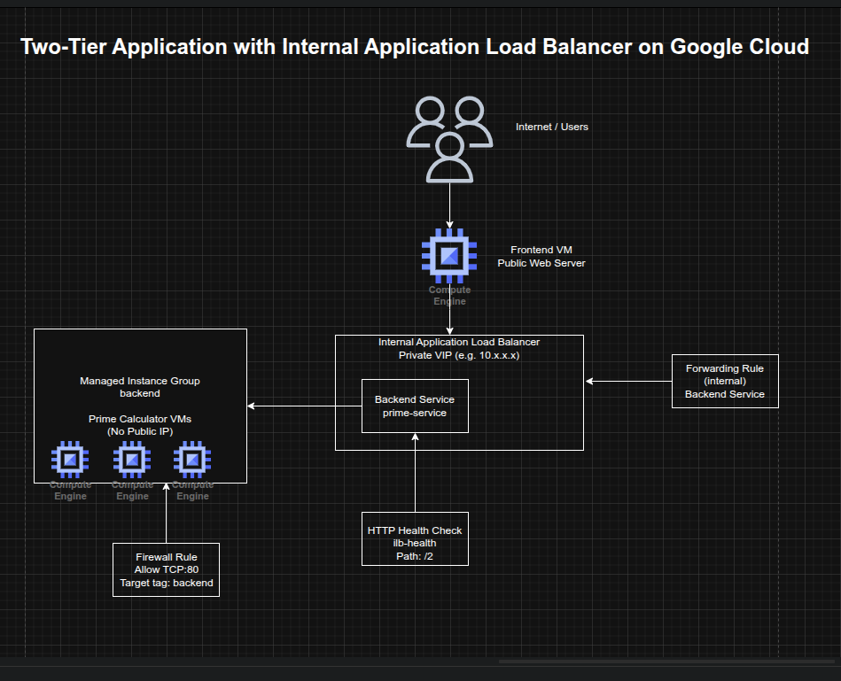

Building a Two-Tier Application with an Internal Application Load Balancer on Google Cloud
Building a Two-Tier Application with an Internal Application Load Balancer on Google Cloud
Timeline: December 2025
Role: Cloud Engineer
Skills: Google Cloud Internal Application Load Balancer, Compute Engine, Managed Instance Groups, Backend Services, Health Checks, Forwarding Rules, Internal Service Design, Two-Tier Architecture, Startup Scripts
Project Summary
This project focused on building a two-tier application architecture on Google Cloud using an Internal Application Load Balancer to expose a private backend service to internal consumers only. The implementation included a managed instance group of backend virtual machines running a lightweight Python prime-number service, an internal load balancer with health checks and backend service configuration, and a public-facing frontend VM that called the internal service to render results for users.
The project demonstrated how to separate public-facing presentation logic from private internal business logic, improving security and service resilience by keeping backend instances off the public internet while still making them accessible through a stable internal virtual IP.
Objectives
- Create a backend managed instance group for an internal service
- Configure firewall rules for internal HTTP access and health checks
- Create an internal Application Load Balancer
- Test the internal load balancer from another internal VM
- Create a public-facing frontend that depends on the internal service
Architecture Overview
The architecture consisted of:
- A managed instance group of backend VMs running a Python-based prime-number calculation service
- A startup-script-driven instance template named
primecalc - A firewall rule allowing internal traffic on TCP port 80 to backend instances
- An HTTP health check for backend validation
- A regional backend service using the internal load balancing scheme
- A regional forwarding rule exposing the internal service on a private IP
- A temporary test VM used to validate the internal service privately
- A public-facing frontend VM running a Python web application that queried the internal load balancer and displayed prime-number results

Implementation & Highlights
1. Preparing the Environment
- Set the default region and zone for Compute Engine resources
- Created and activated a Python virtual environment in Cloud Shell
- Enabled Gemini Code Assist in the Cloud Shell IDE to support explanation of startup scripts and development workflow
2. Creating the Backend Service Template
- Authored a startup script (
backend.sh) that created and launched a lightweight Python HTTP server - Implemented backend logic to determine whether a number was prime and return
TrueorFalse - Created an instance template named
primecalc - Configured backend instances with:
- no external IP address
- backend network tag
e2-mediummachine type
- Ensured the internal service remained private by preventing public internet exposure
3. Building the Backend Managed Instance Group
- Created a firewall rule allowing TCP port 80 to backend-tagged instances
- Created a managed instance group named
backend - Started with three backend instances
- Used a managed instance group to provide a resilient and repeatable backend service layer
4. Configuring the Internal Application Load Balancer
- Created an HTTP health check named
ilb-health - Created a regional backend service named
prime-serviceusing the internal load-balancing scheme - Added the managed instance group as the backend
- Created a forwarding rule named
prime-lbwith a private IP address - Established a stable internal entry point for the prime-number service that routed only to healthy backend VMs
5. Testing the Private Service
- Created a temporary internal VM named
testinstance - Connected to it using SSH
- Queried the internal load balancer with sample values:
245
- Verified correct responses from the service:
TrueFalseTrue
- Confirmed that the private service was working correctly and accessible only from within the VPC
6. Creating the Public Frontend
- Authored a startup script (
frontend.sh) that created and launched a Python web application - Configured the frontend application to call the internal load balancer’s private IP
- Rendered a matrix showing prime and non-prime numbers in the browser
- Created a frontend VM with a public IP and frontend network tag
- Added a firewall rule allowing internet access to the frontend on TCP port 80
- Demonstrated how a public-facing web tier can safely depend on a private internal service tier without exposing backend instances directly
Design Decisions
- Used a managed instance group for the backend to improve repeatability and resilience
- Used an internal Application Load Balancer instead of exposing backend VMs directly
- Removed public IP addresses from backend instances to reduce exposure and align with a private-service design
- Used a health check + backend service + forwarding rule model to ensure only healthy internal backends received traffic
- Kept the frontend public while isolating the business logic in a private backend tier
- Used startup scripts to keep both tiers lightweight, reproducible, and easy to deploy
Results & Impact
- Successfully built a two-tier application architecture on Google Cloud
- Demonstrated practical use of:
- internal application load balancing
- managed instance groups
- private backend services
- public frontend to private backend communication
- health-aware backend routing
- Reinforced a secure application delivery pattern where backend services remain private while still supporting public user workflows
- Added a strong architectural example of internal service exposure without public backend access
Tools & Technologies Used
- Google Compute Engine – Backend and frontend virtual machines
- Managed Instance Groups (MIGs) – Resilient backend tier
- Internal Application Load Balancer – Private service exposure
- Backend Services – Health-aware traffic distribution
- Forwarding Rules – Private frontend IP for the internal service
- Health Checks – Backend validation
- Python HTTP Server – Lightweight backend and frontend logic
- Firewall Rules – Controlled network exposure
Outcome
This project demonstrates the ability to design and implement a secure two-tier internal application architecture on Google Cloud using a public frontend and a private backend service behind an Internal Application Load Balancer. It highlights practical skills in internal service design, health-aware traffic routing, managed backend infrastructure, and private application delivery, which are useful for cloud engineering, infrastructure, and platform roles.